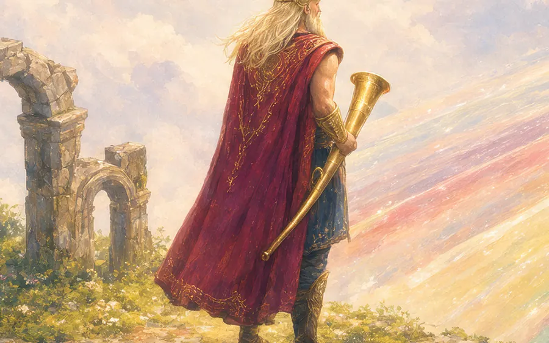
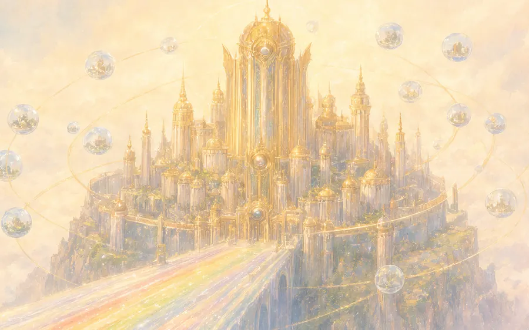
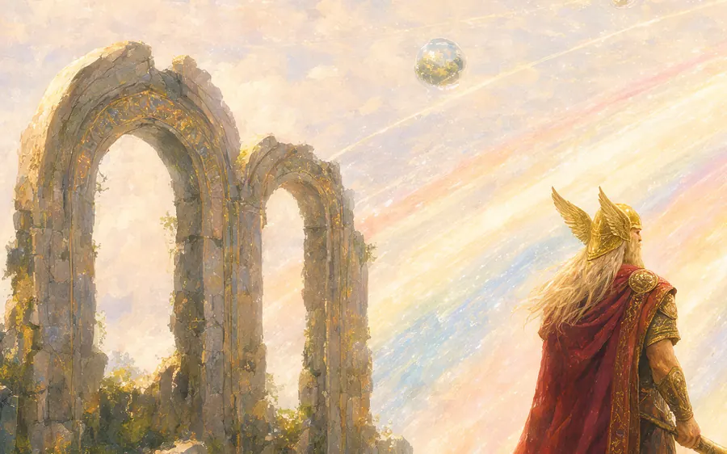

 01 No more LGTM The merge stays closed until the tests pass, every finding is closed with evidence, and a human who is not the author approves. An approval means something again.
 02 No blind trust in one agent One agent never writes, tests and approves its own code. A separate agent writes the tests. Agents from other teams review the change, each with its own name and its own job.
03 Tests you can trust in CI/CD The tests come from the ticket before the code exists. They fail first, for the right reason. They are locked, so nobody deletes them to get a pass. Your CI runs them as a required check.
 04 Reviews that know your history Each reviewer agent knows what its owner knows: the code they own, the rules that must stay true, and the past incidents. It checks the change against all of it.